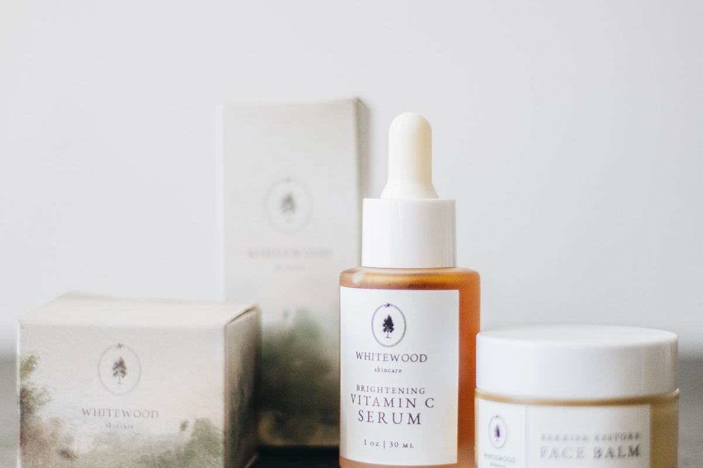

Beauty › Body
Sol de Janeiro Bum Bum Cream Dupes Under $16
Disclosure: This post contains affiliate links. As an Amazon Associate I earn from qualifying purchases. Learn more.

Quick answer
Sol de Janeiro Brazilian Bum Bum Cream is about $48 for 8.1 oz. Tree Hut Tropic Glow Whipped Body Butter (~$9) is the most-cited scent dupe, and Palmer's Brazilian Coco Cream (~$11–16) is the closest in "firming body cream" concept.
Comparison at a glance
Prices are approximate as of Nov 2026 and change often; check the retailer for the current price.
| Product | Price (approx., Nov 2026) | Size | Price/oz | Key features | Where to buy |
|---|---|---|---|---|---|
| Sol de Janeiro Brazilian Bum Bum Cream Original | ~$48 | 8.1 fl oz | ~$5.90/oz | Guaraná extract, cupuaçu butter, açaí and coconut oils; Cheirosa 62 pistachio-salted caramel scent. | Shop on Amazon |
| Tree Hut Tropic Glow Whipped Body Butter Best scent dupe | ~$9 | 8.4 oz | ~$1.07/oz | Shea butter, cupuaçu butter, pistachio oil, guaraná extract; almond, amber and sandalwood notes. | Shop on Amazon |
| Palmer's Coconut Oil Formula Brazilian Coco Whipped Bum, Bust & Body Cream Best "firming cream" alternative | ~$11–16 | 8.8 oz | ~$1.30–1.80/oz | Coconut oil, vitamin E, guaraná, açaí, Brazil nut; creamy coconut scent; vegan, paraben- and phthalate-free. | Shop on Amazon |
The original: Sol de Janeiro Brazilian Bum Bum Cream
A cult body cream (4.6★ from ~55,900 Amazon ratings) loved mainly for its gourmand scent and fast-absorbing texture. Size: 8.1 fl oz.
Sol de Janeiro Brazilian Bum Bum Cream
~$48 (approx., Nov 2026)
Buyers say: The pistachio-caramel scent is addictive and it absorbs fast.
Shop on AmazonThe dupes
1. Tree Hut Tropic Glow Whipped Body Butter
~$9 (approx., Nov 2026)
Buyers say: The warm, sweet scent is a lot like Bum Bum Cream, for far less.
Shop on AmazonWhat matches: Shea butter, cupuaçu butter, pistachio oil, guaraná extract; almond, amber and sandalwood notes.
Why buyers like it
- Buyers frequently compare the warm, sweet scent to Bum Bum Cream.
- Reviewers like the light, whipped texture that absorbs without greasiness.
- Roughly one-fifth of the original's price per ounce.
Watch out for
- Scent is similar, not identical; some buyers find it sweeter or less long-lasting.
- Contains fragrance and fragrance allergens (e.g., limonene, coumarin), so sensitive skin should patch test.
- Some reviewers find it not rich enough for very dry skin.
2. Palmer's Coconut Oil Formula Brazilian Coco Whipped Bum, Bust & Body Cream
~$11–16 (approx., Nov 2026)
Buyers say: A rich, cushiony whipped texture with a creamy coconut scent.
Shop on AmazonWhat matches: Coconut oil, vitamin E, guaraná, açaí, Brazil nut; creamy coconut scent; vegan, paraben- and phthalate-free.
Why buyers like it
- Buyers say the cushiony whipped texture feels rich and moisturizing.
- Reviewers like the coconut scent and the price compared with prestige body creams.
- Widely available at Amazon, Walmart, CVS and Walgreens.
Watch out for
- The scent is coconut, not the pistachio-caramel of the original.
- Any "firming" or cellulite results are brand claims; body creams moisturize, they don't change skin structure.
- Contains Brazil nut and other nut-derived oils (see caution below).
Cautions
Nut allergies: the original contains nut-derived ingredients, Palmer's lists Brazil nut, macadamia and sweet almond, and Tree Hut contains pistachio oil. If you have a tree-nut allergy, read each full ingredient list and ask your doctor. All three are fragranced.
This post is for general information only and is not medical advice.
How we chose
Picks are researched, not personally tested: we compared published specs and ingredient lists, Amazon and retailer star ratings and review counts, recurring themes in buyer reviews, and independent editorial reviews. "Buyers say" statements paraphrase common review themes; they are not quotes.
Prices and ratings checked November 1, 2026.